Work Experience
PROFESSIONAL
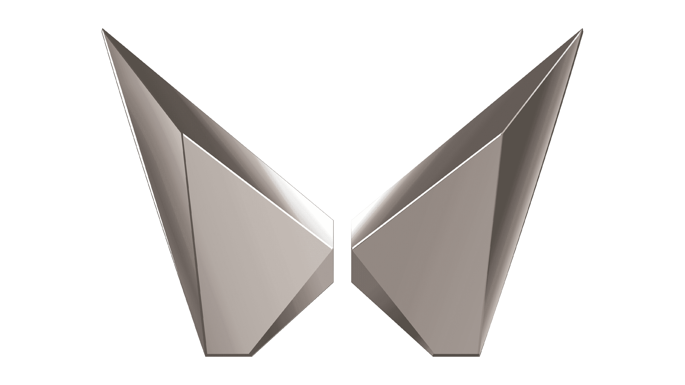
Mahindra and Mahindra Limited [Automotive Product Development] | MRV Chennai, Tamil Nadu, India - 603001
Department - Electrical and Electronics (Vehicle Electronics Software)
Product Development Engineer
August 2022 - July 2023
Worked on projects focused on critical issues regarding
CDC (Cockpit Domain Controller)Vehicles on a production level at mentioned original equipment manufacturer (OEM).My work comprised of certification, debugging and testing processes of Wireless Android Auto and Carplay for the project by colloborating with our 3PL partners and vendors:
Visteon Corporation,AptivandHarmann International.Debugged Infotainment system software in
C++on a firmware scale and traditionalPythonon a development scale leading to a stabilized initial software release for the products.Commute work for bench-level and vehicle-level environmental testing to test WiFi, media playback and Bluetooth features of the infotainment system simultaneously with Navigation (
GPS) implementation.Learnt & understood the hardware architecture, and performed unit testing on the
Silver Boxfor 3 major projectsMahindra XUV 400 EV, the 2023 Electric Vehicle,Mahindra XUV 700andMahindra Scorpio N 2023.Supported the Principal Engineers with Standard Operating Procedures (SOPs) and Software Requirement Documents (SRDs), and gained exposure on how to write the set of work instructions for each of them.
Implemented
TCP/IP, UART, LIN (obsolete)andCANprotocols upon Vehicle Electronic Control Units (ECUs) using various development tools and tested them using diagnostic tools which we will discuss about below.Received Green light approval from Google for Android Auto certification for the project
XUV 400 EV, the 2023 Electric Vehicle andScorpio N 2023leading to USD $1 Million p.a. in CAPEX approvals - $100K more than the ask.Android Auto software testing processes included tests: PCTS Verifier, QSuite, UX, GPS/Navigation, sensor logging. Consistent stable releases lead to a 15% revenue growth in sales in 2 Quarter cycles, due to on-site customer engineer support.
Integrated OTA updates, GPS benchmarking and connectivity features with cross-functional teams like ADAS, HMI and wiring harness for client satisfaction.
Demonstrated expertise in Android and QNX OS, achieving 93% bug fixes in Android Auto’s initial release.
Diagnostics tools like
VectorCANalyzer v16, CANoe and Garuda 2.0 tool for CAN BUS analysis of Electronic Control Units (ECUs). Loggers and CAPL were utilized as well for log storage and debugging processes.Performed signal monitoring of ECU response using CANalyzer and CANoe to measure and check the overshooting of the serial bus data, both on bench and production vehicles for our customers.
My career includes over 1.5 years of vehicle product development and software validation-testing in cockpit electronic systems and cross-functional teams such as ADAS, HMI, wiring harness and Displays. I have worked on several projects such as:
PROJECTS:
MAHINDRA XUV 700

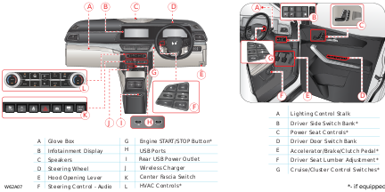
AdrenoX OS (For the In-vehicle Infotainment System)
AdrenoX is developed to transform the complete vehicle experience with premium features and technology in partnership with Amazon Alexa, Sony, Visteon and Bosch.
It brought voice AI capabilities to the XUV700, with India’s first integration of Amazon Alexa in production vehicles XUV700.
AdrenoX is the soul of this project as it is the go-to software used for the entirety of the vehicle electronic system. It has different features for each of the variants:
MX,AX3,AX5andAX7The Adrenox connect mobile app provides information in your mobile phone about location & status of the vehicle and allows to control certain vehicle features in a secured way for both Android and iOS platform.
We use the ADRENOX connect mobile app for connected car related features.
The app comprises of several features and requirements for the owner like:
- KYC ( Know Your Customer) Registration (Requirement)
- Login & Registration (Requirement)
- Over Speed Alert (Feature)
- High Engine Temperature Alert (Feature)
- Vehicle Start/Stop Alert (Feature)
- Ecosense (Feature)
- Find my car (Feature)
- Share my car location (Feature)
And many more features.
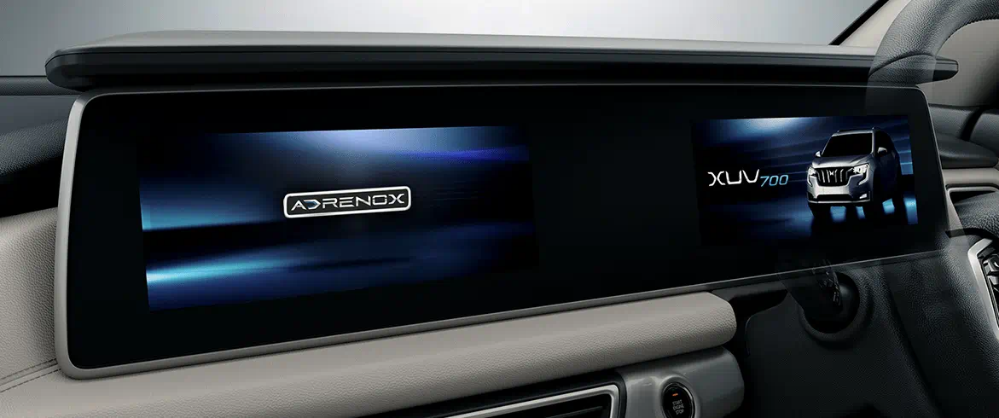
IN-VEHICLE INFOTAINMENT SYSTEM
Offered by AdrenoX, is through integrated 10.25-inch dual screens with a wide display in the segment and SmartCore™ cockpit domain controller technology with the third-generation Qualcomm® Snapdragon™ Automotive Cockpit Platforms developed in collaboration with Visteon.
The infotainment architecture I have worked on for XUV 700:
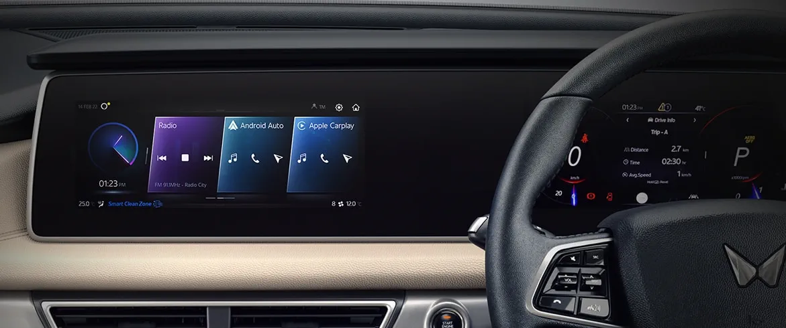
QNX OS (For the Instrument Cluster)
We selected BlackBerry QNX to power Cockpit Domain Controller For Next-Gen XUV700 SUV, especially implemented for the Instrument Cluster.
Combining the latest in chip technology with the highly reliable QNX Hypervisor, the XUV700 allows for design flexibility and scalability to consolidate multiple systems with mixed criticality and different operating environments onto a single hardware platform, reducing both the initial development and long-term costs of ownership while providing the highest standards of functional safety and security.
The CDC levarages the
QNX Neutrino Realtime Operating System (RTOS)andQNX Hypervisorwhich represent key ingredients of the vehicle that serve as secure and trusted foundation of the intelligent infotainment system which includes the Instrument Cluster.
INSTRUMENT CLUSTER
- The digital instrument cluster architecture I have worked on for XUV 700 are of two types, each used in respective particular variants:
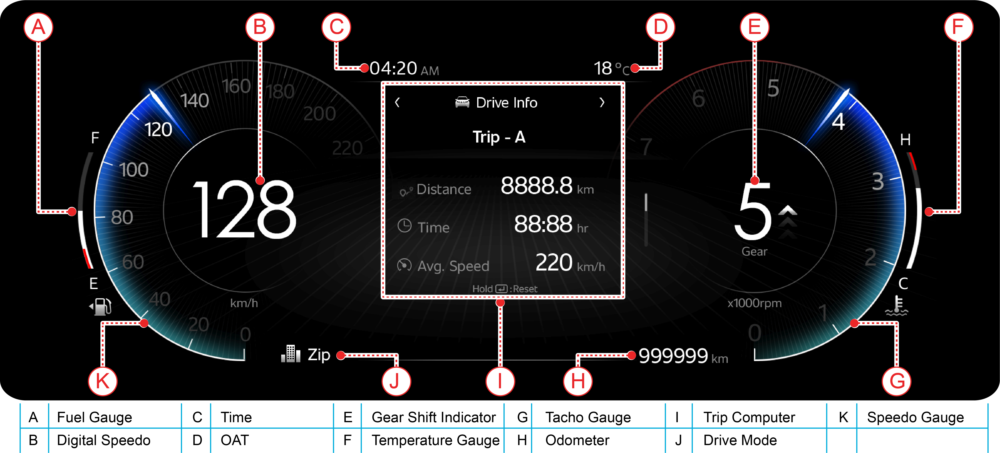
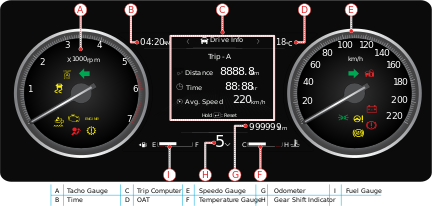
ADAS - Adaptive Cruise control
- Collaborated with the ADAS team to modify and calibrate the cruise control implementation in their SRDs as well as tested their features.
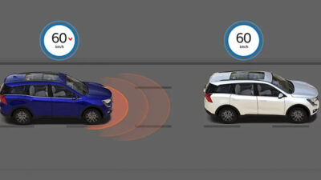
Mahindra Scorpio N
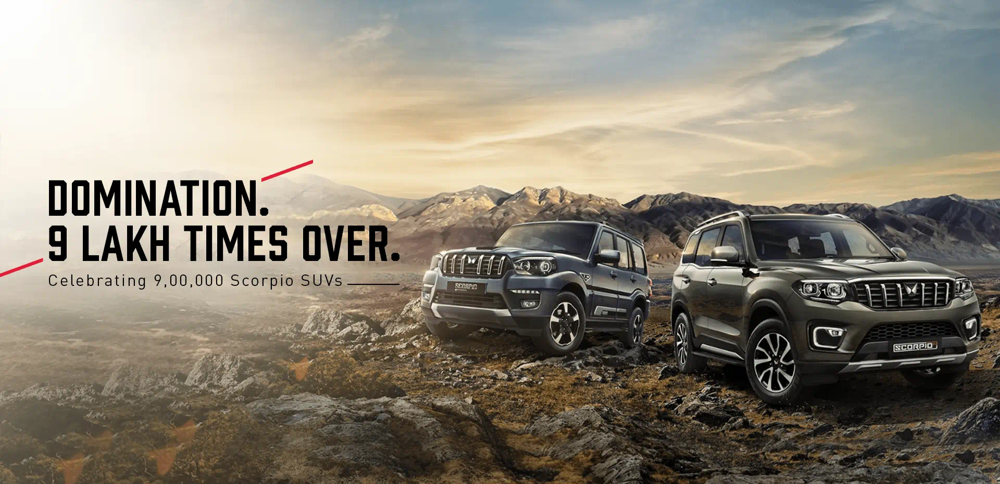
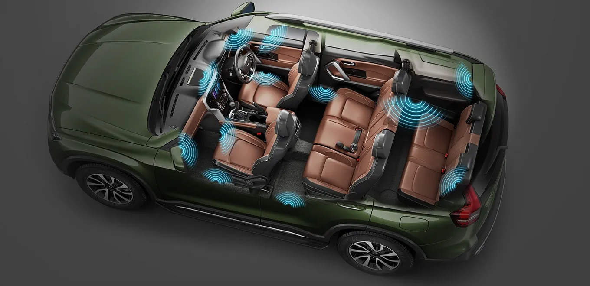
AdrenoX and QNX OS
- AdrenoX and QNX OS are used in latest variants of Scorpio N as well (Z6+) for both in-vehicle infotainment system and instrument cluster, supporting Android OS and QNX Hypervisor for a secure software establishment for the cockpit domain.
IN-VEHICLE INFOTAINMENT SYSTEM
Offered by
AdrenoX, the vehicle has a 8-inch touchscreen infotainment system and SmartCore™ cockpit domain controller technology with the third-generation Qualcomm® Snapdragon™ Automotive Cockpit Platforms developed in collaboration with Visteon.The infotainment architecture I have worked on for Scorpio N:
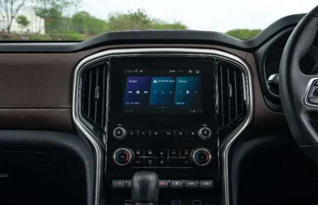
INSTRUMENT CLUSTER
- The semi-digital instrument cluster featuring a 7-inch screen. The cluster architecture I have worked on for Scorpio N, are for 3 variants, Z6, Z8 and Z8L:
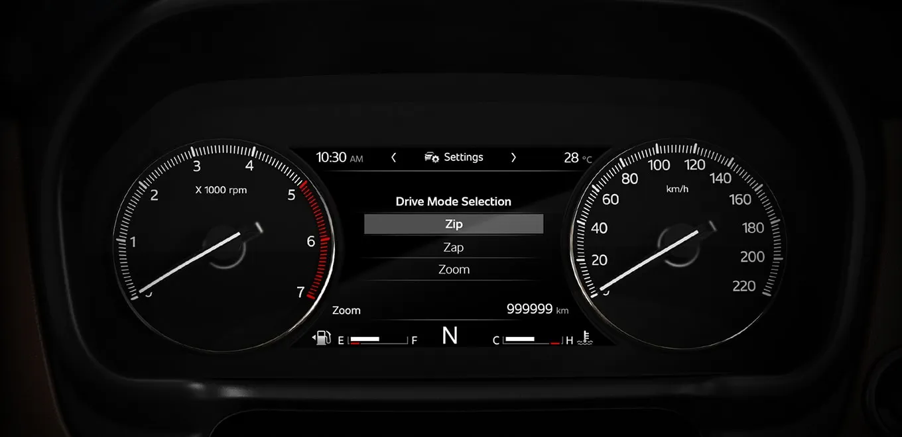
DETAILS AND ACHIEVEMENTS:
With a 20.3 cm infotainment screen, Daddy’s den is equipped with GPS navigation, Bluetooth, USB, Apple CarPlay & Android Auto. With Daddy connectivity and entertainment, are at your fingertips.
Successful Android Auto certification post-development and testing phase of 4 months with commute to vendor locations, confirming green light with Google and performing OTA software release with minimal bugs and user errors.
Calibrated and fine-tuned the cockpit domain controller using CAN tools and logging capabilities, thoroughly testing the live deployed production vehicles of our consumers.
Protcols followed:
- CAN over Ethernet: PDU Transport (e.g., Zone Architecture)
- Diagnostics (UDS over CAN and DoIP)
- SOME/IP
Tools
Vector CANalyzer v16.0
I have performed analysis on network data traffic in serial bus systems, CAN buses in the Electronic Control Units (ECUs) in the vehicle in our product using vector CANalyzer v16.0. We used CANalyzer to check whether and what type of communication is occurring on the network of a particular component. In addition to sending or recording data, interactive ECU diagnosis is also possible.
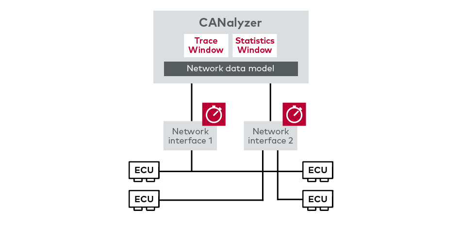
The physical tool that consists of all the components of CANalyzer inlcuding a OBD connection, is shown below:
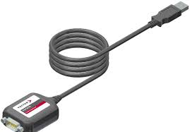
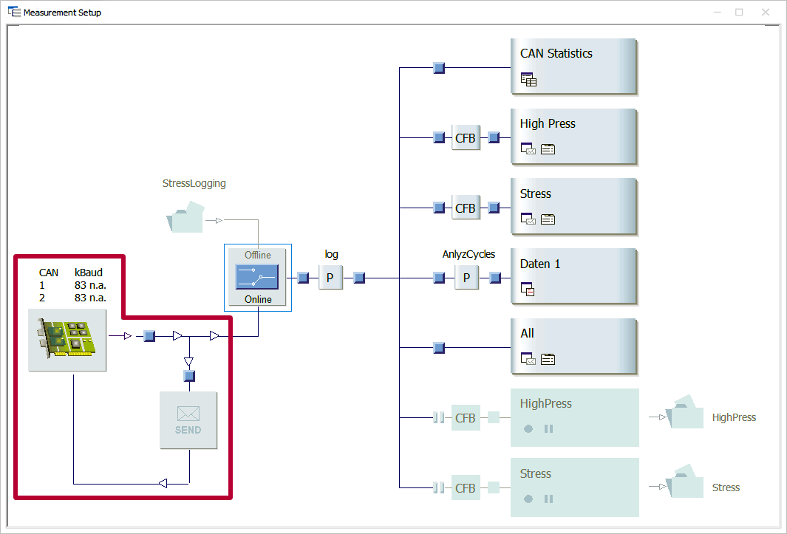
Signal interference analysis of car speed, idle engine running, engine speed, temperature and gear status are some examples of data traffic testing I have performed to verify and check whether the Instrument Cluster is receiving the data (in the form of binary during transmission and testing) accurately from the required ECUs whose functionalities are being tested to display accurate information on instruments like Speedometer, Odometer, Tachometer, Fuel-Level Gauge and Temperature Gauge.
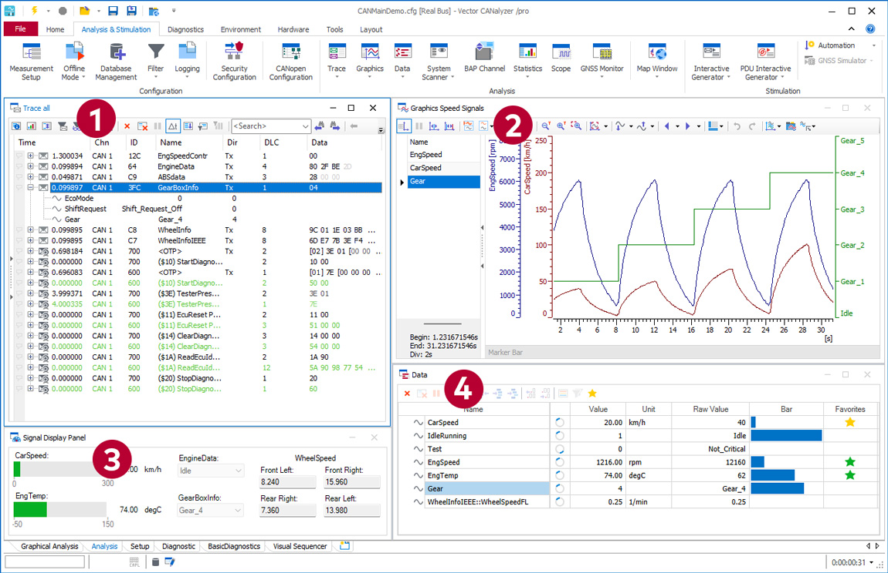
Trace analysis of signal overlapping and cross-function in features like ABS (Anti-lock Braking System), and Gear box, dashboard and engine control.
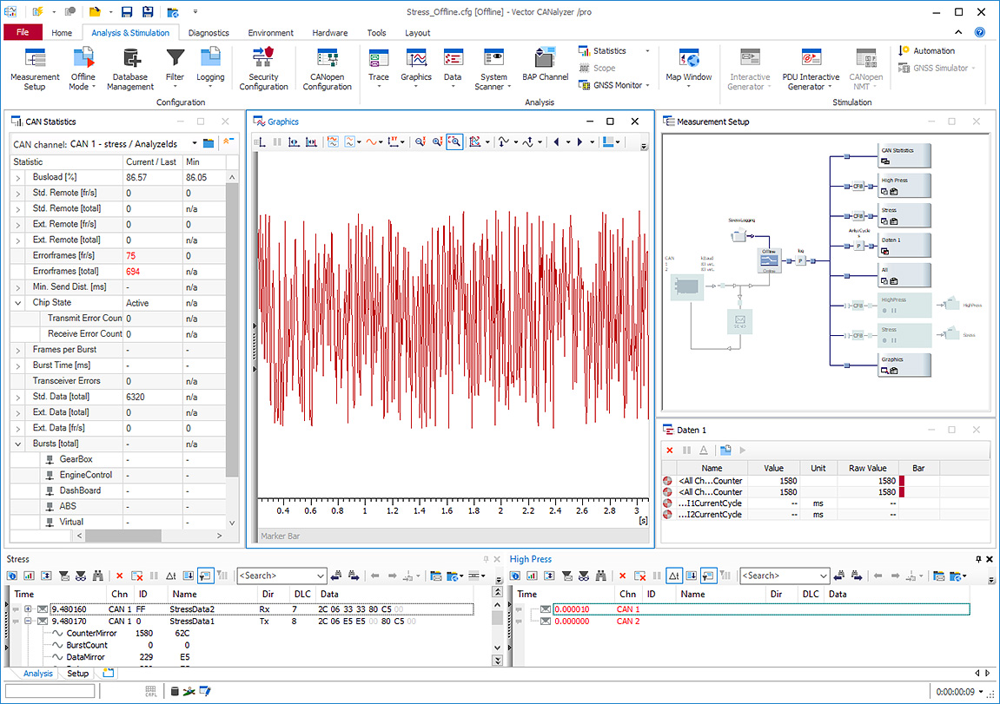
CANoe
CANoe is the comprehensive software tool for development, test and analysis of individual ECUs and entire ECU networks in the automotive and various other industries. It supports network designers, development and test engineers throughout the entire development process – from planning to system-level test.
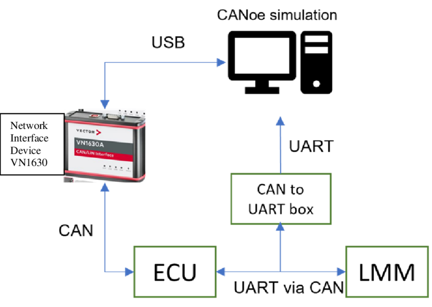
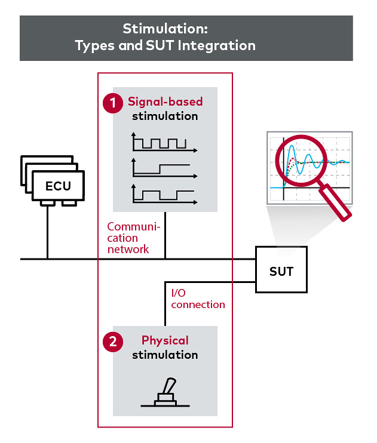
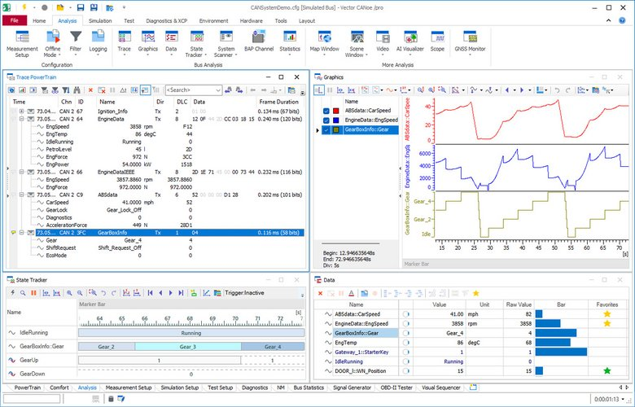
Vehicle Safety (Crash Tests - GLOBAL NCAP)
The OEM’s flagship SUV XUV700 also secured five-star rating in the adult occupant protection program and four-star rating in child occupant protection program. However, with an overall safety score of 57.69 points, it now sits slightly lower than the Scorpio-N.
Mainly, my work revolved around the electrical architecture of the vehicle and especially, cockpit electronics, I supported the Functional Safety CAE team with testing configurations during crash tests during the minimization of time frame between the impact and airbag deployment.
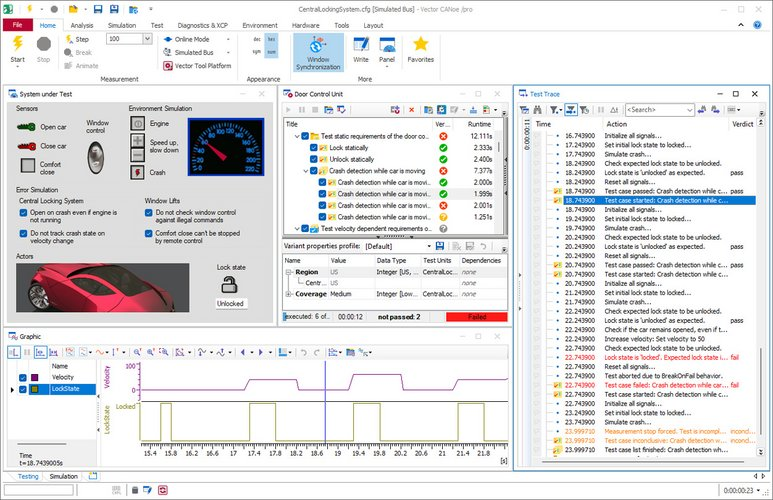
OBD II Scanner
It can be plugged into almost every modern vehicle’s OBD port to get valuable information and real-time data about vehicle systems. A wireless scanner can connect to your cellphone through Bluetooth, and let you access your car’s data through a mobile app.
Garuda II Auto Diagnostic Tool
Garuda is a fully indigenous product from the GlobalEdge stable, provides vehicle network monitoring, re-programming, and diagnostics for a variety of applications, including passenger cars, trucks, buses, off-highway vehicles, and DG set applications. Its compact size, plug-and-play model, and PC connectivity through USB 2.0 and Wi-Fi make it exceptionally user-friendly, even in remote or rugged conditions. Despite its cost-effectiveness, Garuda supports a wide range of protocols and is compatible with host applications such as DiagRA D and Silver Scan.
Equipped with SAE J2534 and RP1210B interfaces, Garuda serves as a superior diagnostic tool for vehicle engineers, allowing the collection of data from diverse network types, including CAN, using standard interface devices. This capability ensures rapid identification and prompt resolution of vehicular malfunctions. To enhance usage optimization and efficient service, Garuda comes with multiple accessories, including the USB cable and OBDII to DB-15 male cable.
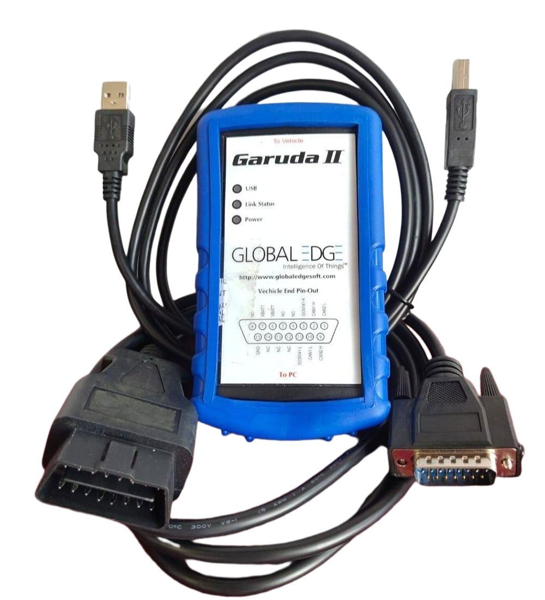
Key Applications include:
- Network analysis and data processing tools
- Diagnostics testers / ECU flashing software
- Production / EOL test tools
- Engine test bed software
- Key programming software
- J1939 network analysis tools
- Field firmware upgrades
- Mobile applications for R&D, production, and after-sales vehicle service
Key Features:
- OBD II connectivity between vehicle and PC
- Wide input voltage range (9 – 32 VDC)
- PC connectivity through USB 2.0 and Wi-Fi
- Vehicle Battery Read (VBATT)
- Supports SAE J2534 and RP1210B API for reprogramming and pass-through diagnostics
- Multi-protocol support - CAN (ISO 11898-2, J2284, J1939, ISO 15765, UDS) and KWP2000 / ISO 14230
Product Specification:
- PC Connection: USB 2.0 / Wi-Fi
- Vehicle Connection: J1962 cable / Integrated J1962
- Enclosure:
- Size: 130 X 76 X 30 mm
- Color: Blue
- Weight: 170 g
- Humidity: 20% to 85 % RH
- Input Voltage: 9 – 32 V
- Power Consumption (Nominal):
- USB mode: 80 mA
- Wi-Fi mode: 140 mA
- Operational Temperature Range: 0° to 65° C
- Shock Endurance: 1.5 meter drop
Wireshark
Wireshark is used in the automotive industry for:
CAN Bus Analysis: Capturing and analyzing communication on the Controller Area Network (CAN) bus for debugging and monitoring.
Diagnostic Communication: Analyzing OBD-II and other diagnostic protocols to diagnose vehicle issues and monitor sensor data.
Ethernet in Automotive: Capturing and analyzing Ethernet frames for high-bandwidth applications like infotainment and advanced driver assistance systems.
Security Analysis: Monitoring network traffic for security vulnerabilities and potential cyber threats in automotive systems.
Protocol Development and Testing: Supporting the development and testing of new automotive communication protocols and systems.
Telematics and Fleet Management: Capturing and analyzing communication between vehicles and backend servers for fleet management and telematics applications.
My contribution:
As it is a proprietary protocol, I had to reverse engineer the data. It might or might not be encrypted so one might need luck in being able to decipher the messages. In my experience, a lot of protocols have some sort of PDU structure with a length and/or sequence number in them, that is where I expanded my domain on PDU’s and continuing to learn further currently.
Oracle Cerner [Cerner Corporation] | Bangalore, Karnataka, India - 560103
Department - CareAware (CCTA)
Software Developer Engineer Intern
August 2022 - July 2023
Worked on a scalable healthcare IT web application using Java, Spring Boot, Python, React, and JavaScript, focusing on patient-bed-nurse allocation.
Created REST API controllers tested with POSTMAN, achieving 95% unit test coverage with JUNIT, Mockito, and Jest/enzyme.
Conducted code reviews and merged around 20 commits/week reducing software defects by 20% alongside optimizing RDBMS MySQL database size by 7% using scripts.
Employed Agile scrums and machine learning to cluster suppliers using medical device data, saving the team 10 hours/week.
DevOps: Utilized Jenkins for CI/CD and pipeline staging script-based automation, integration and deployment processes.
and software engineering for Oracle Cerner and automotive software development and management for Mahindra & Mahindra. I use the MATLAB, JAVA, Javascript and Python programming languages on a daily basis but am much more advanced with my MATLAB work.
SKILLS
Technical: MATLAB, Python, Java, C++, SQL, HTML, CSS, React, JavaScript, Linux bash, Git, CAN, LIN
Frameworks and Tools: RESTful API, GitHub, Jenkins, Microservices, Vector CANalyzer, CANoe, Wireshark, Android, OpenCV, POSTMAN, Android Auto PCTS Verifier, ROS2, Gazebo, MySQL, Scikit-learn, Tableau, Power BI, Spring, JUNIT5, Jupyter, RTOS, Control System Toolbox, Simulink
Other: Agile,
JIRA, Product & Project Management, eLMS (Electronic Life Management System), Microsoft Office Suite